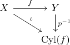
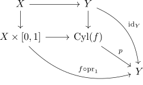

map as cofibration inclusion up to homotopy equivalence
Proposition
Let $X,Y$ be topological spaces, $f: X \rightarrow Y$ a continuous map. Then there exists a Homotopy equivalence $p^{-1}$ and a cofibration $\iota: X \rightarrow \mathrm{Cyl}(f)$

where $\mathrm{Cyl}(f)$ is the mapping cylinder
Proof
using the universal property of a pushout we get

cofibration
inclusion from the domain to the mapping cylinder as cofibration
homotopy equivalence
mapping cylinder canonically homotopy equivalent to the codomain